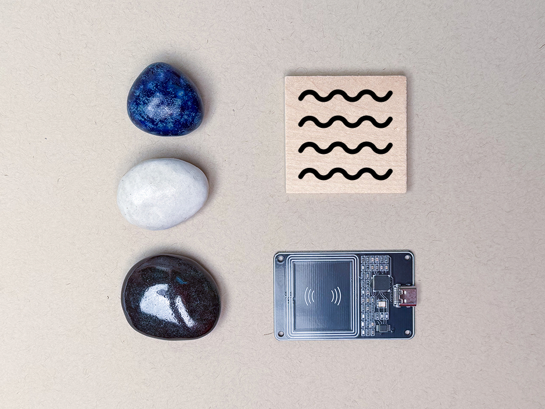
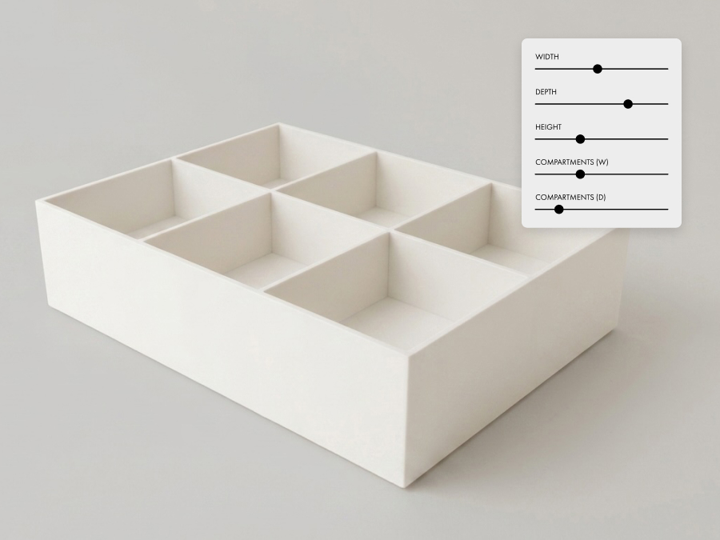

UX designer / technologist / artist
Hello!
I love designing experiences that empower everyone to be creative.
I architect 0 → 1 core interaction principles, distill expansive ideas into user journeys, and figure out all the messy connecting bits to ship.
I've worked on over a dozen new launches at startups, big companies, and studios.
Here is my work, both professional and personal.

A collection of minimal tools rethinking personal computing.
Bridging digital and physical, open source and DIY. AI with intention.
More to share soon.

A considered library of 3D-printable designs for the home.
Every piece is parametric.
Quiet, minimal designs that are wonderfully functional.